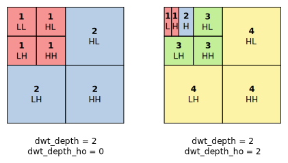
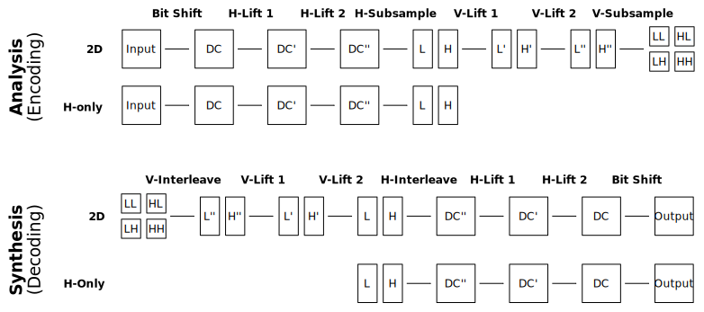
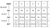

Terminology¶
This software uses the following naming conventions to identify the numerous intermediate values within VC-2 analysis (encoding) and synthesis (decoding) filters.
Levels and subbands¶
Levels and subbands are numbered similarly to the VC-2 specification with the exception of the DC-band being listed as part of level ‘1’, and not level ‘0’.
For a given transform level, the filtering process is broken down into a series of steps which transform an array of input values into several (subsampled) arrays during analysis (encoding) and the reverse during synthesis (decoding).
Intermediate value arrays¶
The naming convention used for transform levels and subbands is extended to give names to every intermediate array of transform values in a multi-level transform. Within a single transform level, the arrays are named as illustrated below:
Note
In diagrams above two lifting stages are shown for each filter. For filters
with more than two lifting stages, the outputs of these stages follow the same
pattern. For example, for a Daubechies (9, 7) filter, which has four lifting
stages, the additional arrays are named DC''', DC'''', L''',
L'''', H''' and H''''.
For example, in a 2-level 2D analysis transform, we can use these names like so:
The original input picture would be completely identified as ‘Analysis, Level 2, Input’
The array following the initial bit-shift operation is ‘Analysis, Level 2, DC’.
The final results after horizontal and vertical lifting filters would be identified as ‘Analysis, Level 2, LL’, ‘Analysis, Level 2, LH’, ‘Analysis, Level 2, HL’ and ‘Analysis, Level 2, HH’.
The input to the next analysis transform is ‘Analysis, Level 1, Input’ and is exactly the same array as ‘Analysis, Level 1, LL’, just renamed for consistency.
The synthesis transform is analogous. For example, the final decoded picture would be identified as ‘Synthesis, Level 2, Output’ in a 2-level transform.
Phases¶
Each of the intermediate arrays of values within a synthesis or analysis transform may be considered to be the result of some a 2D polyphase filter on the original input picture or transform coefficients. As such, each value in the array may be thought of as being the result of a particular phase of the filter, each with its own filtering characteristics. Since there are only a finite number of filter phases, we can completely characterise the process which led to a particular array using only one value per filter phase.
For example, consider a horizontal only 1-level Haar analysis transform on a 1D image:
It should be easy to see the repeating patterns of operations in the different arrays in the example.
For instance, in the DC’ array, even numbered entries take the form \(2~\text{Input}[n]\) while odd numbered entries take the form \(2~\text{Input}[n] - 2~\text{Input}[n-1]\). As a result, the DC’ array may be described as having two phases or, alternatively, as having a period of two. By contrast the DC array has a period of one, since all entries are alike (taking the form \(2~\text{Input}[n]\)).
In the more general case of 2D filters processing 2D pictures, the period of a particular array is given as two numbers, e.g. (2, 4), giving the period in the X dimension and the period in the Y dimension respectively. Likewise, individual phases are also identified by an X and Y value.
Using these conventions, a particular phase of a particular intermediate array of values may be named. For example, ‘Analysis, Level 1, DC’, 0, 1’ identifies the filter phase X=0, Y=1 at the output of the bit shift operation of the final transform level of the analysis filter.
Targets¶
For the purposes of analysing the filter behaviour leading to a particular array, it is sufficient to analyse one example of each filter phase, and this is exactly what this software does. When it comes to generating test pictures, however, this software may not always pick the top-leftmost example of a particular filter phase to test. The specific example chosen is referred to as the ‘target’ value.
Since all instances of a particular filter phase are alike, using a different example is still equivalent if it has the same phase.
There are various reasons why a test picture might not pick the top-left most example of a particular filter. For example, consider the problem of generating a test picture which tests both phases of the DC’’ array in the Haar example above. To test phase 0 of the DC’’ array we pick the zeroth element as our target and use inputs ‘a’ and ‘b’ to test filter. If we wish to simultaneously test phase 1 of this array, we can’t use element 1 as the target because this also depends on inputs ‘a’ and ‘b’, so instead we must pick element 3 (which uses inputs ‘c’ and ‘d’) as the target instead.